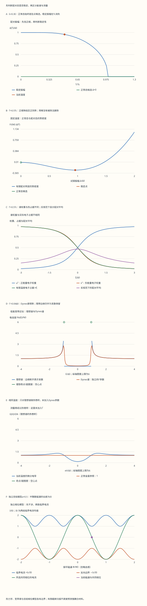

本页目录
- 有能隙、能配对、能无耗散流动，是三个需要连接的判断
- 1. 我们究竟要解释哪件事？
- 2. Cooper 问题：为什么 Fermi 海会放大很弱的吸引？
- 3. 平均场近似到底省略了什么？
- 4. 先解一个两模式块，再认识 Bogoliubov 准粒子
- 5. 自洽方程还不够：必须比较正常态和配对态
- 6. 零温解、临界比值与一个算得出的例子
- 7. 能隙如何进入谱？权重与占据为什么不同？
- 8. 一个峰变宽，可能是两种不同运算
- 9. 数值实验怎样处理发散，而不是把它藏起来？
- 10. 配对相位怎样产生 London 电流？
- 11. 从 Josephson 关系推导双结干涉
- 12. 用实验反驳错误解释，再带着问题读前沿
凝聚态 II · BCS 超导：配对、能隙与相位怎样连起来
前置：二次量子化、Fermi 分布、二阶矩阵对角化和Landau 自由能。本页目标：自行推导一个可求解的配对模型，解释为什么选择某个能隙解，并区分谱函数、测量展宽与相位刚性。
建议分三次学习：第 1–5 节建立模型，第 6–9 节连接谱与实验，第 10–12 节处理相位、电流与验证。先完成每组预测，再打开实验结果。
有能隙、能配对、能无耗散流动，是三个需要连接的判断
1. 我们究竟要解释哪件事？
一个金属冷却后，低能电子激发减少，电流可以长期维持，弱磁场被排出体内。这些现象彼此相关，却不能用“电子两两牵手”一句话代替推导。束缚倾向回答能量是否降低；能隙回答添加激发需要多少能量；相位刚性回答扭转整个凝聚态要付出多少代价。
本页采用一个明确的平衡、均匀、各向同性 s 波、常态态密度近似常数的平均场模型。单粒子能量相对于化学势记作 \(\xi_{\mathbf k}=\epsilon_{\mathbf k}-\mu\)。定义 \(N_0\) 为每体积、每能量、每自旋的正常态态密度，\(g>0\) 为吸引耦合，\(\lambda=N_0g\) 为无量纲耦合。配对只作用于 \(|\xi|\le E_D\) 的壳层，\(E_D\) 是能量；若用 Debye 角频率表示，才写 \(E_D=\hbar\omega_D\)。
实验把能量以任意固定单位 \(E_0\) 表示，温度通过 \(k_BT\) 进入公式。“\(T/T_c=0.5\)”表示实际温度是本模型临界温度的一半，不能把它理解为 \(0.5\) 开尔文。把截断 \(E_D\) 加倍并保持 \(\lambda\) 不变，会同时缩放 \(\Delta_0\) 与 \(k_BT_c\)；归一化曲线不随这个单位缩放而改变。
模型忽略了频率依赖相互作用、复杂能带、非 s 波配对、无序的具体机制和相位涨落。把 \(\lambda\) 调到较大值，得到的是这个有限截断模型的形式结果，不是 Eliashberg 理论，也不是某种高温超导材料的预测。
2. Cooper 问题：为什么 Fermi 海会放大很弱的吸引？
先冻结 Fermi 海，在其上方加入两个总动量为零、相反自旋的电子。只允许未占据的 \(0<\xi<E_D\) 模式参与。令两电子相对于海面能量的本征值为 \(-B\)，其中 \(B>0\) 是束缚能的大小。对壳层内常数吸引，配对振幅满足
右边与 \(\mathbf k\) 无关，因此 \(A_{\mathbf k}\) 与 \((2\xi_{\mathbf k}+B)^{-1}\) 成正比。再求和一次，连续态密度近似给出
当 \(B\to0^+\) 时，对数发散。因此在这个连续壳层模型中，任意小的 \(\lambda>0\) 都产生正 \(B\)。起作用的是海面附近非零态密度与 Pauli 限制后的积分区间；这不是“所有三维真空吸引势都能束缚两粒子”的定理。有限盒子的能级间距、不同态密度和配对通道都会改变论证的前提。相关的原始课程推导见 Arovas 的 Cooper 问题第 12.2 节。
但 \(B\) 还不是超导体的单粒子能隙。这里仅让额外两个电子移动；真正的 BCS 态允许海面附近许多占据一起重排。两个问题的指数也不同：弱耦合时 \(B\sim2E_De^{-2/\lambda}\)，而后面会得到 \(\Delta_0\sim2E_De^{-1/\lambda}\)。
先预测： 如果把 \(B\) 直接写成 \(\Delta_0\)，哪个实验量会被误算？先记下判断，再看第 6 节的谱。
3. 平均场近似到底省略了什么？
定义一对相反动量、自旋模式的湮灭算符 \(b_{\mathbf k}=c_{-\mathbf k\downarrow}c_{\mathbf k\uparrow}\)。约化配对 Hamiltonian 为
配对求和限制在壳层内。\(\mathbf k\) 在全动量集合取值，\(\mathbf k\uparrow\) 与 \(-\mathbf k\downarrow\) 配成一组；另一组 \(-\mathbf k\uparrow,\mathbf k\downarrow\) 使用不同自旋模式。采用这一约定后，不再额外乘一个“补偿重复”的 \(1/2\)。
令 \(b_{\mathbf k}=\langle b_{\mathbf k}\rangle+\delta b_{\mathbf k}\)，舍去 \(\delta b_{\mathbf k}^\dagger\delta b_{\mathbf k'}\)，并定义
于是
最后的常数项不能删除。它虽然不改变固定 \(\Delta\) 时的本征矢，却决定不同试探 \(\Delta\) 之间的自由能比较。删除它会失去自洽方程中的代价项，甚至让“配对越大越好”成为假结论。
原 Hamiltonian 守恒粒子数；固定相位的平均场表达式包含改变粒子数 \(\pm2\) 的项。这里是在使用便于描述宏观相干的变分近似，不是宣布孤立超导体可以违反电荷守恒。可以把 BCS 态投影回固定粒子数扇区；在有限、严格固定粒子数的态中，\(\langle cc\rangle=0\) 并不排除长程配对关联。
4. 先解一个两模式块，再认识 Bogoliubov 准粒子
暂时选规范使 \(\Delta\ge0\) 为实数。一个配对块有空态 \(|0\rangle\)、双占据态 \(|\uparrow\downarrow\rangle=c_{\mathbf k\uparrow}^\dagger c_{-\mathbf k\downarrow}^\dagger|0\rangle\)，以及两个单占据态。空态与双占据态混合的矩阵是
其本征能量为 \(\xi\pm E\)，其中 \(E=\sqrt{\xi^2+\Delta^2}\)。两个单占据态的能量都是 \(\xi\)，所以从配对块基态 \(\xi-E\) 到一个单占据态，激发代价是 \(E\)。两个准粒子都激发时，代价为 \(2E\)。
基态可写作 \(u|0\rangle+v|\uparrow\downarrow\rangle\)，取 \(u,v\ge0\)，有
这些是概率振幅的平方与乘积。当 \(\xi\ll-\Delta\) 时，双占据权重接近一；当 \(\xi\gg\Delta\) 时，空态权重接近一；在海面 \(\xi=0\)，二者各为一半。它是跨不同占据态的相干叠加，不是“电子有一半时间消失”。
用 Nambu 列向量 \(\Psi=(c_{\mathbf k\uparrow},c_{-\mathbf k\downarrow}^\dagger)^T\)，对应的 BdG 矩阵为
对于 \(E>0\)，无需挑选容易受相位约定影响的本征矢，也能写出谱投影
实验保留完整矩阵，可直接核对 \(P_\pm^2=P_\pm\) 与 \(hP_\pm=\pm EP_\pm\)。当 \(\Delta=0,\xi=0\) 时，\(h=0\) 完全简并，公式中的 \(1/E\) 不适用；页面明确留空，不编造唯一的 \(u,v\)。有限温度下该零能电子态的平均占据仍为 \(1/2\)。
5. 自洽方程还不够：必须比较正常态和配对态
设 \(f(E)=(e^{E/(k_BT)}+1)^{-1}\)。两种准粒子热占据使配对平均变成
把它代回 \(\Delta\) 的定义，用壳层两侧的对称性合并积分，得到
先保留外面的 \(\Delta\)。 \(\Delta=0\) 始终是候选解。只有求正根时，才把它除掉。
固定化学势，令 \(F(\Delta,T)=(\Omega_s-\Omega_n)/\mathcal V\)。本模型中与试探振幅对应的完整巨正则势差为
零温时最后一项取极限为零。\(\Delta=0\) 时三项合计恰为零；这为数值计算提供一个锚点。对 \(\Delta\) 求导得到原自洽方程：
为什么低于 \(T_c\) 只有一个正根？令 \(x=E/(2k_BT)>0\)，则 \(\tanh x/x\) 严格递减，因为
左边在 \(x=0\) 为零，导数是 \(2x\,\operatorname{sech}^2x\tanh x>0\)。增大 \(\Delta\) 会增大每个 \(E\)，所以 \(I(\Delta,T)\) 随 \(\Delta\) 递减，并最终趋于零。若 \(I(0,T)>1/\lambda\)，导数在正根前为负、根后为正，正根就是全局径向最小值；若 \(I(0,T)\le1/\lambda\)，正常态 \(\Delta=0\) 已是最小值。临界点满足 \(I(0,T_c)=1/\lambda\)。
因此，正根、稳定性、临界温度来自同一个势函数。图中的正常态零线低于 \(T_c\) 仍存在，但不能与稳定态混为一谈。所谓“全局”只指本页均匀平均场、固定 \(\mu\) 和所选配对通道内的振幅比较，没有证明排除其他序或空间非均匀态。
6. 零温解、临界比值与一个算得出的例子
零温时 \(\tanh(E/(2k_BT))\to1\)，正根方程可精确积分：
只有在 \(\lambda\ll1\) 时，才进一步用 \(\sinh(1/\lambda)\simeq e^{1/\lambda}/2\)。临界温度的弱耦合渐近式与比值为
\(\gamma_E\) 是 Euler 常数，不能和后文谱展宽 \(\Gamma\) 混用。这里非解析的 \(e^{-1/\lambda}\) 尺度无法由绕 \(\lambda=0\) 的有限阶 Taylor 多项式表示；但重求和、Cooper 通道的重整化群等方法仍能识别这种不稳定性，不能据此说“微扰思想永远无能为力”。
取 \(\lambda=0.30,E_D=E_0\)，本页求得 \(\Delta_0/E_0\approx0.0714389\)，\(k_BT_c/E_0\approx0.0404495\)，比值约 \(3.53225\)。它与渐近常数略有差别，是有限截断模型的正常结果。相同 \(\lambda\) 下，Cooper 两电子问题的 \(B/E_0\approx0.00254851\)，显然不能替代 \(\Delta_0\)。
零温稳定点的凝聚能也有精确有限截断表达式：
弱耦合时才约为 \(-N_0\Delta_0^2/2\)。若文献把两种自旋合计为 \(N_{\mathrm{tot}}=2N_0\)，同一结果就写成 \(-N_{\mathrm{tot}}\Delta_0^2/4\)。遇到差一个二的公式，先核对态密度约定。
7. 能隙如何进入谱？权重与占据为什么不同？
真实电子的激发谱包含正负两个分支。在实 \(\Delta\) 的约定下，每自旋电子谱函数为
谱权重的和为 \(u^2+v^2=1\)。把谱乘 Fermi 分布再积分，才得到电子占据：
所以 \(v^2\) 只在零温时等于电子占据；升温后不能把“相干因子”直接当成“已占据概率”。这也是第三幅实验图画出两者的原因。
进一步采用低能宽带、常数 \(\Delta\) 近似，对 \(\xi\) 积分得到
在 \(|E|=\Delta>0\) 处存在可积的平方根发散；不能因为绘图高度有限就把峰顶当成一个有限理论值。\(\Delta=0\) 的正常态极限是 \(N_s/N_0=1\)，包括 \(E=0\)。
这里要认清一个近似边界：前面的热力学使用有限配对壳层，而此处把常数能隙谱延伸为宽带表达式。两者不是任意高能处完全相同的模型。 低能应用要求所关心的 \(\Delta,k_BT,|eV|\) 远小于相关能带/截断尺度。本实验在较大 \(\lambda\) 下会提醒谱窗超出 \(E_D\)；那里只能读作两个形式模型的对照，不能把图当成精确的材料能谱。
8. 一个峰变宽，可能是两种不同运算
Dynes 表达式用 \(\Gamma\ge0\) 改写谱：
平方根要选与正常态相容的推迟分支。本页先计算 \(E\ge0\)，再用粒子—空穴对称延拓负能量，避免在负能一侧得到错误的负态密度。对于 \(\Gamma>0\)，
这说明该参数可以填充谱隙。但 \(\Gamma\) 在此是现象学谱参数，不是数值积分步长，也不能仅凭拟合就唯一解释为某种寿命。环境辅助隧穿可在一定条件下产生相同 Dynes 形式，这是 Pekola 等人的原始研究给出的具体反例。
第二种运算来自测量中的热占据。对弱隧穿、正常电极态密度平坦的 N–I–S 接触，把理想超导谱转换为归一化微分电导：
热核 \(-\partial_Ef=[4k_BT\cosh^2((E-eV)/(2k_BT))]^{-1}\) 面积为一。\(T\to0\) 时它趋于 \(\delta(E-eV)\)，电导才直接读取谱；有限温度下，理想硬谱隙也能对应非零的零偏电导。正常态常数谱卷积后仍为一。
第五幅图只对理想谱做热卷积，不加入 \(\Gamma\)。因此改变 \(\Gamma\) 只影响第四幅图；改变温度则同时影响自洽能隙和热核。现实拟合可以同时加入更多机制，但需要分别说明，并识别参数之间的混淆。
9. 数值实验怎样处理发散，而不是把它藏起来？
直接在 DOS 奇点上套均匀网格容易得到假峰高或不收敛结果。对理想谱的热卷积，先令 \(E=\sqrt{\xi^2+\Delta^2}\)，则
把正负能分支合并，得到没有平方根发散的积分：
其中 \(K_T(x)=[4k_BT\cosh^2(x/(2k_BT))]^{-1}\)。这是一个改变积分变量的恒等式，没有修改物理谱。
实验用自适应积分计算有限区间，并把尾部另行约束。若积分上限为 \(L>|eV|\)，因为 \(\sqrt{\xi^2+\Delta^2}\ge\xi\)，遗漏尾部满足
积分表中的“误差估计”来自自适应算法，不是严格区间证明；“尾部上界”才是上面的解析不等式。页面保留二者，避免把根求解的很小残差误当作所有误差都已消失。独立验算还应换用另一种求积方法、检查温度与截断缩放、正常态极限和正负偏压对称性。
根表的上下界是采用当前求积结果后的二分区间，并没有把求积误差包成严格的真根区间。要证明真根被包含，需要有保证的积分上下界；本页不作这个额外宣称。
对零温理想谱，边缘发散直接标为 \(\infty\)；下载记录用显式奇点标志与空数值保存，绝不偷偷写成零。图窗最高显示六倍正常态 DOS，空心点提示超图窗或奇点，表格保留完整值。
10. 配对相位怎样产生 London 电流？
写 \(\Delta(\mathbf r)=|\Delta|e^{i\theta(\mathbf r)}\)。带电序参量随规范变换而变，\(\theta\) 本身不是一个孤立的可观测量。设凝聚对电荷为 \(q=-2e\)，采用
真正不变的是 \(\hbar\nabla\theta-q\mathbf A\)。在长波、局域 London 描述中，用对密度 \(n_p\) 与对有效质量 \(m_p\) 写动能密度和电流：
均匀 \(n_p/m_p\)、无涡旋区域中取旋度，再用静磁 Ampère 定律，得到
半空间内满足表面边界条件的场可写 \(B(x)=B(0)e^{-x/\lambda_L}\)。若采用连续自由电子的 \(m_p=2m\)、电子超流密度 \(n_s=2n_p\)，同式变为 \(\lambda_L^2=m/(\mu_0n_se^2)\)。晶格体系的刚性更一般，不能仅用一个配对数就替代完整响应计算。
这一步说明为什么“有单粒子能隙”还不等于“已经证明 Meissner 效应”：还需要电流对规范场的响应和相位刚性。零电阻也涉及相位滑移、涡旋运动、缺陷和耗散通道，不能仅靠第 5 节的标量能隙方程判定。
围绕没有穿过零振幅点的闭合路径，单值性给出 \(\oint\nabla\theta\cdot d\mathbf l=2\pi n\)。因此
把整数方向重定义后，其单位大小是 \(\Phi_0=h/(2e)\)。量子化的是包含电流项的 fluxoid（磁通子）；只有路径深入厚超导体、沿途电流可忽略等条件下，才简化为 \(\Phi=n\Phi_0\)。外加磁通本身不必取整数值。参见 WMI 的 London 与 fluxoid 推导。
11. 从 Josephson 关系推导双结干涉
跨弱连接的相位应先扣除矢势线积分。沿所选方向定义
取与之匹配的电流、电压方向约定，通常把 Josephson 关系写成 \(I=I_c\sin\varphi\)、\(\dot\varphi=2eV/\hbar\)。改变整体方向只改变对应符号；直流电压产生的频率大小为 \(2e|V|/h\)。这不是普通单电子电阻定律。更完整的电路还包含电容、准粒子电流与环境，见 WMI 的 Josephson 电路课程。
现在让两条弱连接组成环，忽略自感，并选环路方向使 \(\varphi_1-\varphi_2=2\pi f\)，其中 \(f=\Phi/\Phi_0\)。定义共同相位 \(\varphi=(\varphi_1+\varphi_2)/2\)，则
两结临界电流设为 \(I_{c1}=I_0(1+a)\)、\(I_{c2}=I_0(1-a)\)，\(0\le a\le1\)。先相加实际电流：
利用 \(A\sin\varphi+B\cos\varphi\) 的最大值为 \(\sqrt{A^2+B^2}\)，得到
对称结 \(a=0\) 在半整数磁通处相消；\(a>0\) 的谷底是 \(2aI_0\)；\(a=1\) 时只剩临界电流为 \(2I_0\) 的一条结，临界电流不再随磁通振荡。不能先把两条结各自最大值相加，因为达到各自最大值的相位未必满足同一个环路约束。
第六幅图画临界电流包络以及固定共同相位下的实际电流，两者不是同一条曲线。\(I_c(f)\) 的磁通周期为一；固定相位的带符号电流可在 \(f\mapsto f+1\) 时反号，这不与临界电流周期矛盾。
这个子实验的 \(I_0,a,\varphi,f\) 独立给定，不从上面的 \(\Delta(T)\) 反推出材料结参数。温度滑到 \(T>T_c\) 时，图中双结模型仍是独立的相位示范，不能声称同一材料此时还承载 Josephson 电流。有限自感需要联立自生磁通，详见 WMI 的 SQUID 推导与自感限制。
12. 用实验反驳错误解释，再带着问题读前沿
按以下顺序操作，比只看默认曲线更有收获。
- 固定 \(\lambda=0.30\)，比较零温、\(0.99T_c\)、\(T_c\) 与 \(1.3T_c\)。同时看根表和巨正则势：正常态何时从不稳定变为稳定？在 \(T_c\) 处，小曲率是否足以让你误判数值噪声？
- 只把 \(E_D\) 加倍。核对绝对能隙、临界温度随之加倍，而 \(\Delta/\Delta_0\) 与 \(2\Delta_0/(k_BT_c)\) 不变。再改 \(\lambda\)，观察这种不变性不再适用。
- 在 \(\xi=0\) 比较低温有隙态与临界无隙态。为什么前者有确定的谱权重，而后者的简并投影必须留空？为什么电子占据两者都可以是 \(1/2\)？
- 分别改变 \(\Gamma\) 和温度，记录哪幅谱图、哪幅电导图改变。尝试用“一个峰宽参数”解释所有变化，然后指出它丢失了什么。
- 在半磁通处把 \(a\) 从零调到一，记录谷底如何抬高。查看完整相位扫描，确认最大的是两结电流之和，而不是两个独立最大值。
下一步可以沿三条问题链继续：用Green 函数描述谱、自能和可测响应；研究各向异性或多能带配对时，哪些常数比值失效；研究低维相位涨落时，配对温度与相干温度为什么可能分离。基础不是阻挡前沿的清单，而是让你能区分“新机制”“新近似”与“原来公式换了一套符号”的工具。
无脚本对照：六份记录保留完整能隙曲线、试探振幅的巨正则势、谱投影、理想与Dynes谱、热卷积和双结相位扫描。积分误差估计不是严格区间界；热卷积尾界另行保存。

| 预设 | λ | T/Tc | Δ/Δ0 | 稳定势差/(N0Δ0²) | Φ/Φ0 | a | Ic/I0 |
|---|---|---|---|---|---|---|---|
| default | 0.3 | 0.5 | 0.95700395 | -0.26127729 | 0 | 0 | 2 |
| zero | 0.3 | 0 | 1 | -0.49936368 | 0 | 0 | 2 |
| weak | 0.15 | 0.01 | 1 | -0.49989345 | 0 | 0 | 2 |
| critical | 0.3 | 1 | 0 | 0 | 0 | 0 | 2 |
| half | 0.3 | 0.5 | 0.95700395 | -0.26127729 | 0.5 | 0 | 1.2246468e-16 |
| asymmetric | 0.3 | 0.5 | 0.95700395 | -0.26127729 | 0.5 | 0.5 | 1 |
下载六份完整记录。DOS和电导图窗上限为6，发散不当作0。对称结半磁通处的极小浮点残差对应数学上的零。较高耦合的谱窗可能超出配对壳层，宽带谱只作形式对照。
八道检验理解的题
1. 为什么 Cooper 束缚能不能等同于 BCS 单粒子能隙？
Cooper 问题固定 Fermi 海，只求海面上方两个电子的束缚态。其积分分母为 \(2\xi+B\)，并且只有 \(\xi>0\) 的未占据态，所以
BCS 自洽问题让壳层两侧的占据共同重排，单粒子激发为 \(E=\sqrt{\xi^2+\Delta_0^2}\)，最小值是 \(\Delta_0\)。其零温方程为 \(\operatorname{arsinh}(E_D/\Delta_0)=1/\lambda\)。弱耦合指数分别为 \(e^{-2/\lambda}\) 与 \(e^{-1/\lambda}\)；物理过程和数值尺度都不同。对于 \(\lambda=0.30,E_D=E_0\)，前者约 \(0.00254851E_0\)，后者约 \(0.0714389E_0\)。把“打破宏观配对态产生两个准粒子至少需要 \(2\Delta_0\)”也不能反过来解释成孤立 Cooper 问题的束缚能。
2. 配对块只有两个混合态，为什么准粒子有两个独立占据数？
完整两模式空间是四维，除了混合的空态、双占据态，还有两个单占据态。四个能量依次可写成
以 \(\xi-E\) 为基准，激发代价就是 \(0,E,E,2E\)，恰好等价于两种独立费米准粒子的占据 \(n_\alpha,n_\beta\in\{0,1\}\)，能量为 \(E(n_\alpha+n_\beta)\)。配分函数因此含因子 \((1+e^{-E/(k_BT)})^2\)。漏掉两个单占据态，会同时算错熵、有限温度配对平均与自由能中的因子二。
3. 证明正能隙根是本模型的稳定振幅，并解释Tc处的零解。
定义 \(I(\Delta,T)\) 为第 5 节积分。对 \(T>0\)，函数 \(\tanh x/x\) 递减；因此 \(I\) 对 \(\Delta\) 递减。势导数为 \(2N_0\Delta(1/\lambda-I)\)。当 \(T<T_c\) 时，\(I(0,T)>1/\lambda\)，所以从零出发导数为负；穿过唯一正根后导数为正。这给出径向全局最小，而不是只靠“求解器收敛了”判断稳定。
正常态的曲率为
它在 \(T_c\) 处为零，\(T>T_c\) 为正。\(T_c\) 时对任意 \(\Delta>0\) 都有 \(I(\Delta,T_c)<I(0,T_c)=1/\lambda\)，所以势仍从零向上增长；“二阶导为零”不等于“每个振幅都等价”。\(T=0\) 的正常态原点带对数非解析性，不能把一个有限曲率数值硬填进去。
4. 自己推导有限截断的凝聚能，并核对态密度约定。
零温积分满足
在稳定点，用 \(\operatorname{arsinh}(E_D/\Delta_0)=1/\lambda\) 抵消代价项，留下 \(F/N_0=E_D(E_D-\sqrt{E_D^2+\Delta_0^2})\)。有理化后得到负值，数值上也避免两个相近的大数相减。若 \(\Delta_0/E_D\ll1\)，展开为 \(F\simeq-N_0\Delta_0^2/2\)；写成两自旋总态密度则为 \(-N_{\mathrm{tot}}\Delta_0^2/4\)。默认例子的 \(F/(N_0\Delta_0^2)\approx-0.499364\)，略偏离 \(-1/2\)。
5. 为什么热卷积能产生零偏电导，却不必填充理想谱隙？
理想谱在 \(|E|<\Delta\) 为零，但有限温度的热核不是一个点。即使 \(V=0\)，积分仍采样 \(|E|>\Delta\) 的非零谱，因此 \(G(0)>0\)。这不是把谱函数本身改成非零。
换元 \(E=\sqrt{\xi^2+\Delta^2}\) 后，正能部分的 Jacobian 正好消去理想谱的平方根因子；负能部分给第二个热核。若 \(\Delta=0\)，两个半轴拼成整条实轴，归一化热核积分为一，所以 \(G/G_N=1\)。若 \(T=0\)，核成为 delta 分布，才恢复直接读取 \(N_s(eV)/N_0\)。因此温度展宽与 Dynes 展宽不能在解释上直接互换。
6. 能隙边缘发散，会不会让总谱权重无穷大？
设 \(E=\Delta+\varepsilon\)，其中 \(\varepsilon>0\) 很小，则
局部积分 \(\int_0^\eta\varepsilon^{-1/2}d\varepsilon=2\sqrt\eta\) 有限，所以这是可积奇点。更直接地，若只比较对称 \(\xi\) 窗口 \(|\xi|\le X\)，其对应的正能上限是 \(\sqrt{X^2+\Delta^2}\)，则
加上负能半轴得到 \(2X\)，与原窗口每自旋的正常态计数一致。不能拿相同数值的 \(E\) 窗口与 \(\xi\) 窗口比较后，就指认“凭空多出状态”；两种能量坐标的边界映射不同。
7. 从相位刚性推导fluxoid，为什么外加磁通不必量子化？
由电流关系解出
沿闭合路径积分，左边第一项是电流贡献，第二项是磁通；右边是 \(nh/q\)。因为 \(m_p/(n_pq^2)=\mu_0\lambda_L^2\)，得到第 10 节的 fluxoid 关系。外加场改变时，超电流可以调整，使组合仍满足整数约束；不能删去电流项后宣称任意外加磁通都必须跳成整数。只有适当厚壁几何、可选取沿途电流近零的闭合路径等条件下，磁通本身才近似取 \(n\Phi_0\)。
8. 推导不对称SQUID谷底，并检查单结极限。
令 \(A=2\cos(\pi f)\)、\(B=2a\sin(\pi f)\)，则 \(I/I_0=A\sin\varphi+B\cos\varphi\)。把 \((\sin\varphi,\cos\varphi)\) 看成单位向量，Cauchy–Schwarz 给出最大值 \(\sqrt{A^2+B^2}\)，方向平行时可取到。
半整数 \(f\) 处 \(A=0\)，所以 \(I_c/I_0=2a\)，即两结临界电流之差的绝对值除以 \(I_0\)。\(a=0\) 时完全相消；\(a=1\) 时 \(I_{c2}=0\)，而 \(I_{c1}=2I_0\)，因此任意磁通下临界电流都为 \(2I_0\)。固定共同相位时的电流仍可变化，因为结1相位含有 \(\pi f\)，但对共同相位取最大后包络恒定。数值表中理想相消点可能残留 \(10^{-16}\) 量级浮点值，应与数学上的严格零区分。